Server Room
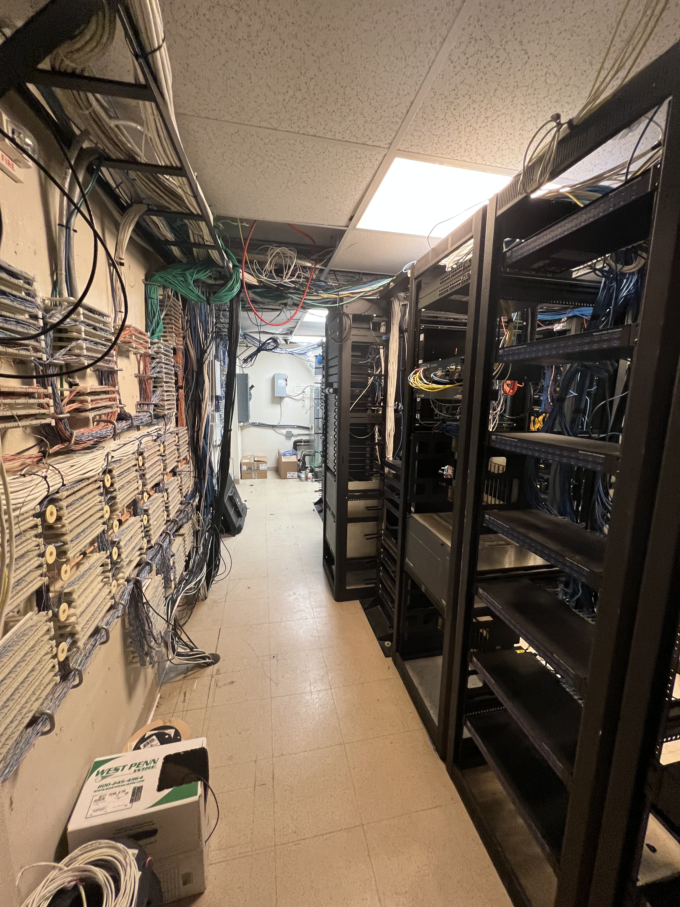
Left Aisle:
On the left side of the first aisle you will find a wall filled with 110 Punchdown Blocks and
wire.
These wires coming in and being punched down include every camera on property.
The cables are the image wires that are connected within the camera.
Once terminated at the wall they are then ran to their respective receiver.
I like to refer to it as a gargantuous splice connecting our cameras to our servers.
Click here to read about 110 Punchdown Blocks
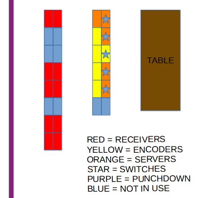
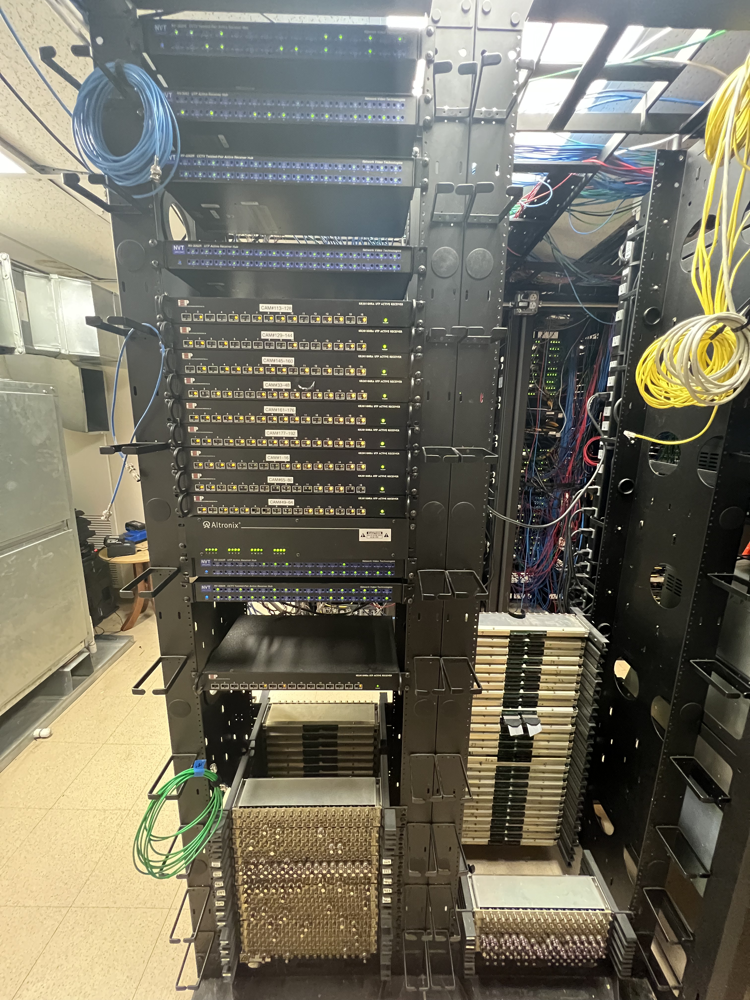
First row, far end: What you see are the front of receivers and also old Video Patch
Panels that are no longer in use because they have been phased out.
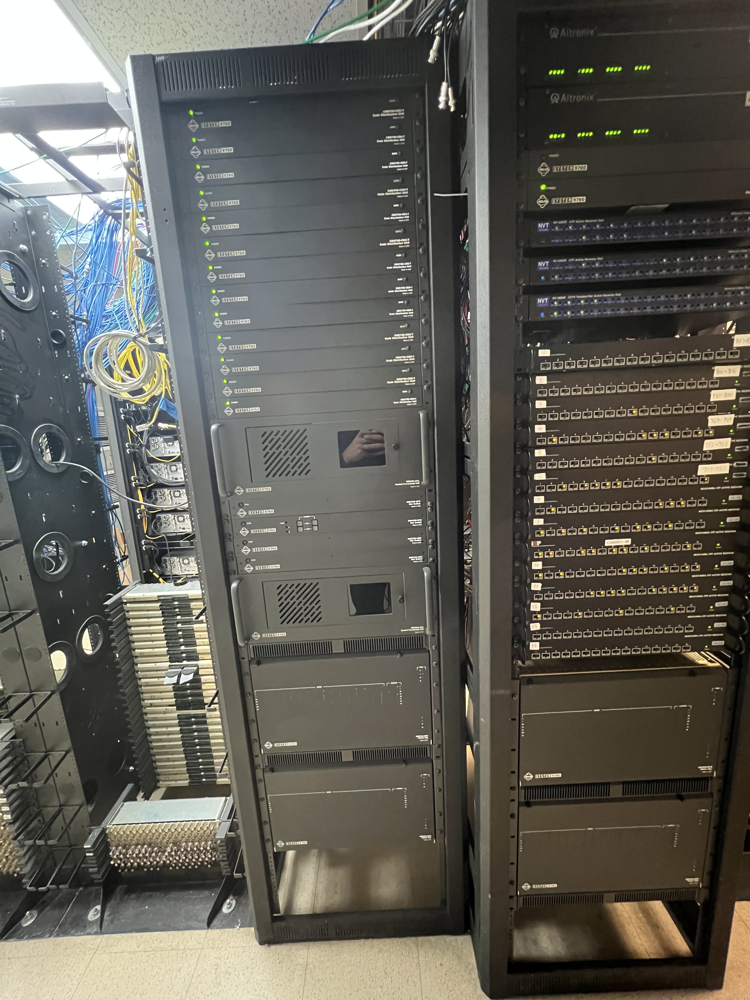
First row, middle: where you are looking at more receivers and power supplies for our
analog cameras.
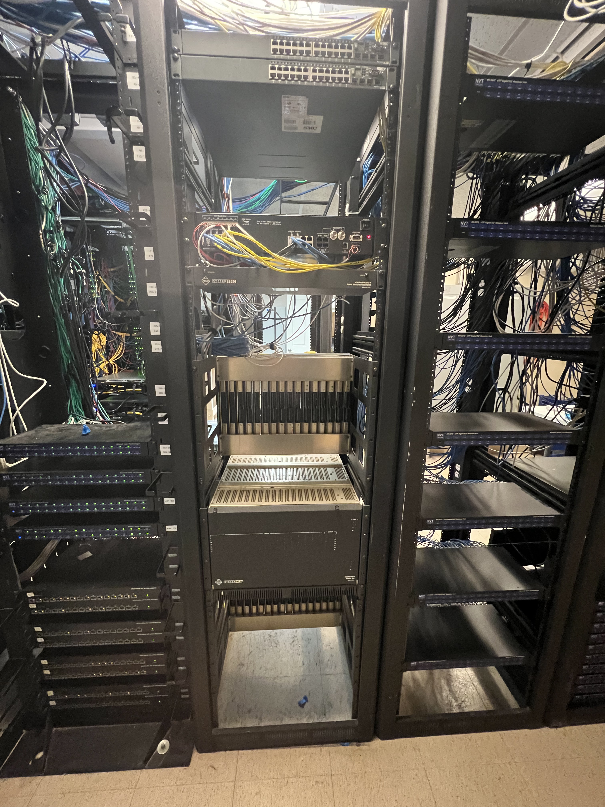
First Row, Front: This image shows you the front of some of the receivers we use.
Lights on the front glow when there is an image running through the respective port.
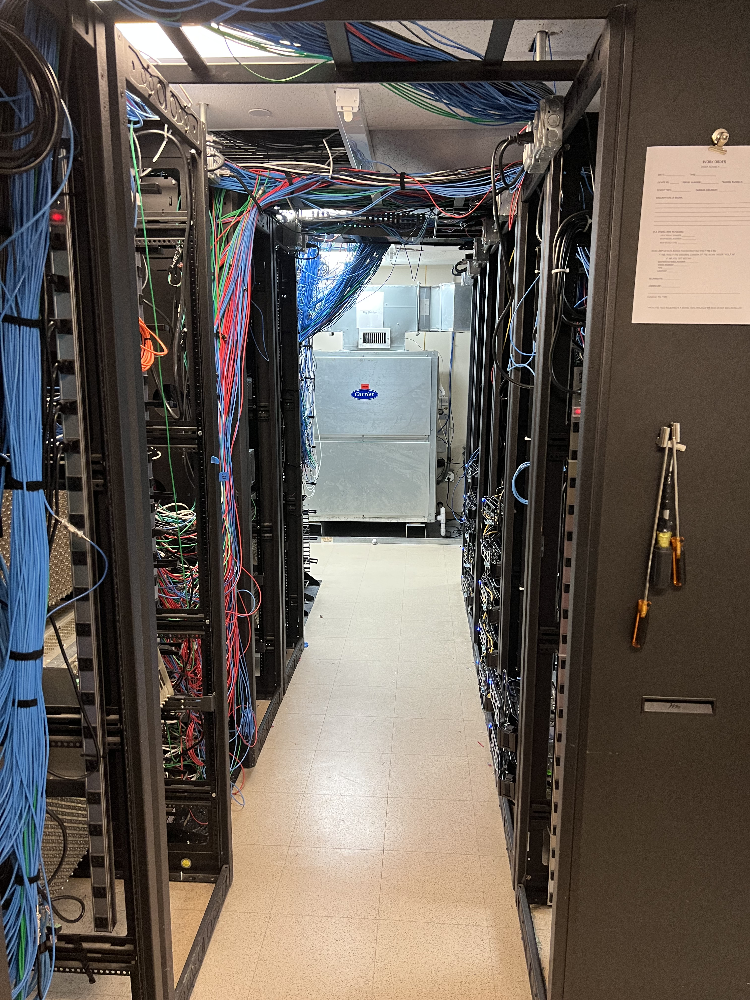
Middle Row, Left-Side:
On the left side, it is obvious we are looking at the back of the receivers.
You'll notice BNC
ports with coax cable shooting over to the encoders, that is the path for the image to the network.
It is quite unorganized so while working in this area it is imperative to pay close attention to what
you are doing. It is very easy to mistakenly unplug or disconnect something. When running a new analog
image to an encoder you first must find an empty spot on a receiver. Some ports may have wires going
into them but
nothing plugged into the BNC port, this is an empty channel and can be used by terminating your wires
in the spots that the old ones are terminated.
Right-Side: On the right side you'll notice it is also an unorganized mess. There you will mostly
find
coax cables running into the encoders. You'll also see short, yellow cables that are called patch cables
which
are used to connect the encoder to the switch. On the back of the encoders are also audio ports. not
many are being used but the ones that are always need to be properly connected. they are crucial to the
operation
of security and surveillance within the casino.
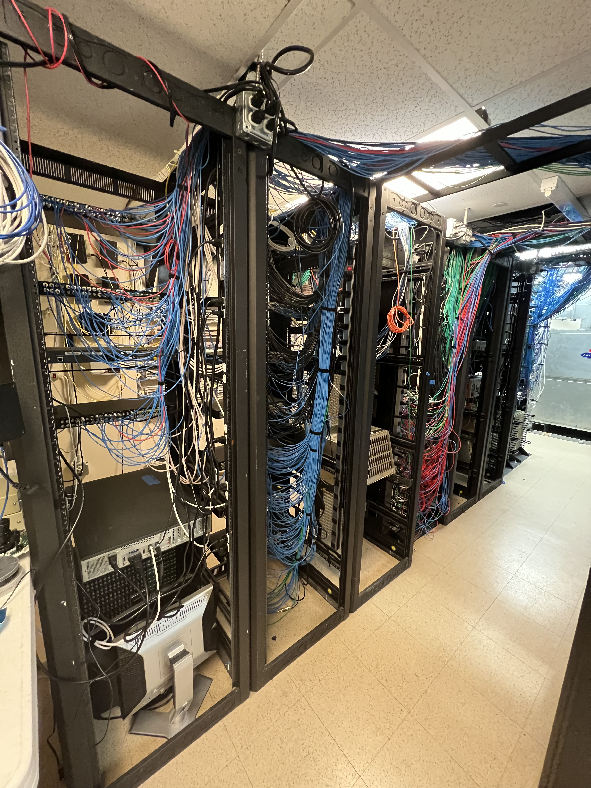

Left side: Here is a better picture of the entire left side of the middle row. You see a mess of
wires even some
equipment that is obsolete and no longer in use. As we continue to improve our system everyday,
we also want to improve the aesthetics of our racks by running the wires in a more organized fashion,
and
removing excess cable when possible.
Left Side, Far End: Here we have a better picture of the back of some receivers. You can see
thick, white
cable that holds 32 pairs of UTP wire. These wires carry data from the punchdown blocks on the wall to
the receivers.
It is more efficient than running 8 separate cables of 4 pairs. Each incoming port has a positive(+) and
negative(-) and also
a number associated with it. The number indicates which outgoing BNC port is related to which incoming.
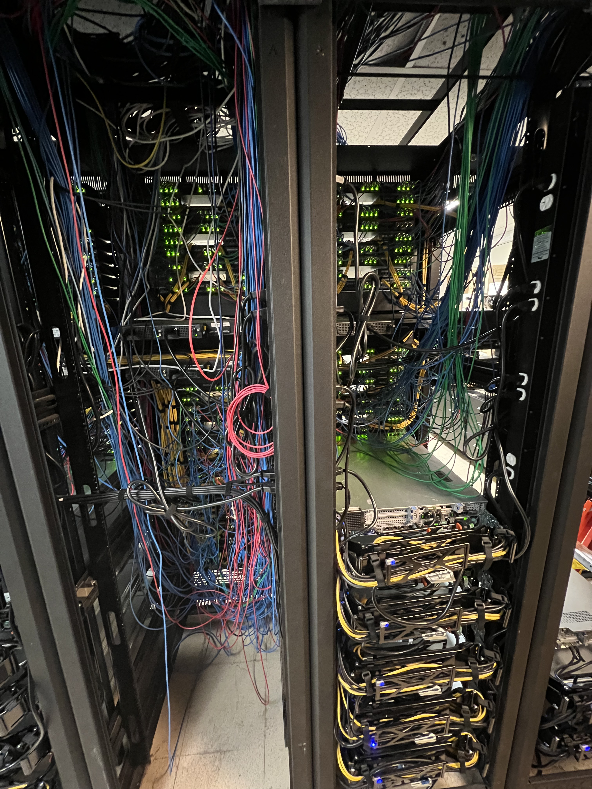
Middle row, Right Side: In the center of row of racks There is a lot going on. To break it
down we will
start in the Left
column where you can see the back of the encoders. The bright lights indicate that image data is
being sent to the encoder,
so that port of the encoder is in use. Dividing that rack towards the middle are the rears of two
network switches that the encoders
are connected to. In the right hand column, on the top you can see more encoders. Again, below that
is a network switch and even further
below you can see the back of some of our servers.
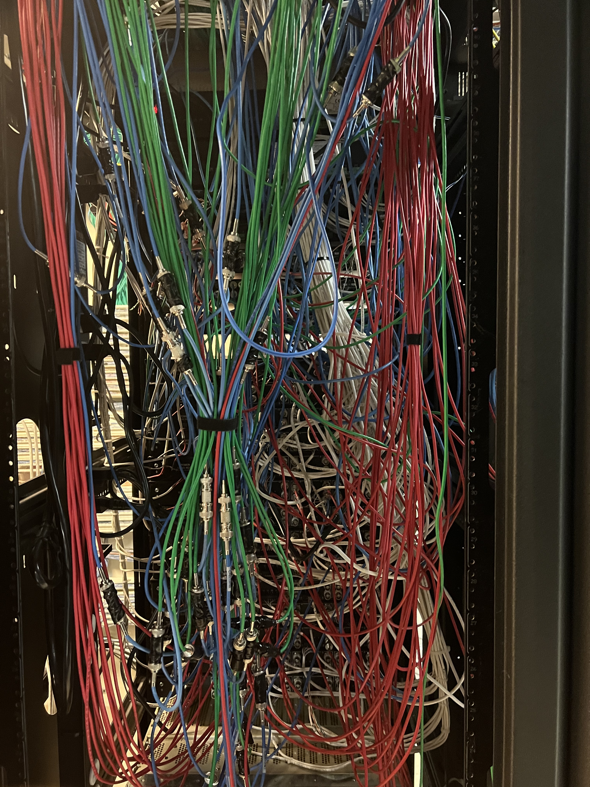
This is simply another picture of a cluttered mess behind some of our receivers. Slowly but surely
we are working
on fixing the mess so that we can access what we need easier, but also to increase the airflow
through the racks.
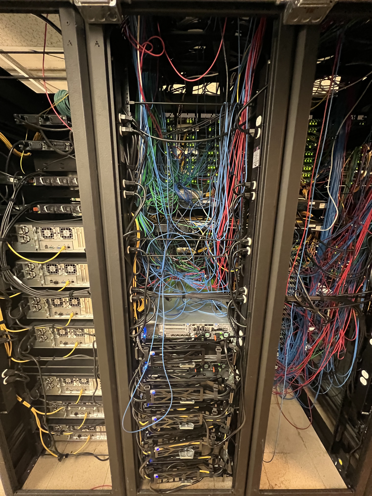
Middle Row, Far Right End: Here we are looking at the far end of the right side of the middle
row of racks. You can see all the
coax
cables running into
their respective encoders where the analog images will be converted into data and sent over the
network
to
the server. May be hard to see,
but the encoders have 4 ports and 4 lights to go with them. If there is a cable running into the
encoder
but
no light is on, that means There
is an issue with the circuit for that camera. Whether it be at the camera, a splice, a punch block,
receiver
or the cable itself.
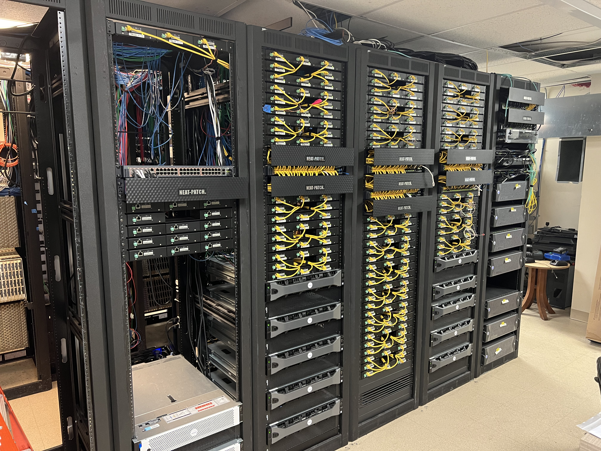
Right Aisle:
The right side of the right rack shows a few different peices of equipment. First, you see the front of
our Avigilon Encoders.
You can see where the yellow patch cable plugs into the encoder, connecting it to the network switch. On
the far right you
can see the front of our Pelco NSM Server and above that a few more switches. Beneath the encoders in
the column to the left is the front
view of our Dell Avigilon servers. In this column above you can also see another switch with numerous
Cat5E cables plugged into them. Each
column has atleast two switches. Two columns over there are, again, more encoders with Avigilon servers
beneath them. The last column shown
here gives us a clean view of some encoders beneath a network switch. There are no patch cables plugged
in and no lights on because these
encoders are not in use as of now. The switch does have cable running to it, powering some recently
installed IP cameras.
Finally at the bottom of that row. you can see two Aviglon NVT's. These are servers that also supply
cameras with analytic capability.